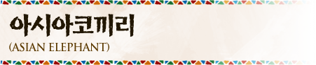

- 인지능력이 아주 뛰어난 동물이에요.
- 민감한 피부를 보호하고 기생충을 제거하기 위해 수시로 진흙에 몸을 뒹굴고 흙을 몸통에 뿌려요.
- 청각과 후각이 매우 발달되어 있고 사람에게 들리지 않는 낮은 소리인 저주파로 대화해요. 저주파는 아주 멀리까지 전달될 수 있어서 유용해요.
- 수영을 잘하고 좋아해요.
- 코로 정교한 조작을 할 수 있어요. 코 끝에는 손가락과 같은 돌기가 하나 나 있어서 작은 것을 집을 수도 있어요.
- 물을 마실 때는 코로 물을 빨아들였다가 다시 입에 넣어요. 코로 빨대같이 빨아들여 마실 수는 없어요.
- 수컷이 20살이 되면 발정시기(Musth)가 오고, 이 때는 혈액 내에 남성호르몬인 테스토스테론이 20배 증가해요. 그래서 공격적 성향 및 암컷을 찾으러 이동하는 행동이 아주 강해져요.
- 하루에 약 18번 배변하는데 코끼리 똥을 통해 여러 가지 식물의 씨앗이 멀리 퍼지기도 해요.
- 암컷 아시아 코끼리의 상아는 작아서 잘 보이지 않고 보통 수컷에서만 상아가 뚜렷하게 보이는데 에버랜드의 암컷 코끼리 하티는 상아가 다른 코끼리들보다 커서 잘 보여요.
*참고 :아프리카코끼리는 암컷과 수컷 모두 상아가 잘 보여요.


- 학명
- Elephas maximus
- 분류
- 장비목 코끼리과
- 멸종등급
- IUCN 적색목록 위기종(EN, Endangered) CITES 부속서 I
- 분포
- 동남아시아와 인도(과거에는 히말라야 및 중국 남부까지 서식)
- 서식지
- 다양한 유형의 초원 및 숲(관목숲, 열대우림, 경작지) * 초원에 낮은 나무가 있는 지역을 선호해요.
- 먹이
- 대부분 풀, 관목, 나무껍질, 뿌리, 나뭇가지, 과일, 간혹 사탕수수나 옥수수를 먹기도 해요. 하루 150kg을 먹어요.
- 크기
- 몸길이 5.5~6.4 m, 어깨높이 2.5~3 m, 수컷 몸무게 5.4톤, 암컷 무게 2.7톤
- 사회구조
- · 혈연관계인 암컷 6~7마리가 한 무리를 지어 살아요.
· 서로 다른 무리가 모여 일시적으로 큰 무리를 형성하기도
해요.
· 나이가 가장 많은 암컷이 무리의 우두머리를 맡아요.
우두머리 암컷은 메이트리악 'matriarch' 이라고 불러요.
· 수컷은 6~7년이 지나 번식을 할 수 있을 정도로 자라면
태어난 무리를 떠나 주로 단독 생활을 해요.


로스트 밸리 동물카드 모으기!
로스트 밸리 홈페이지의
탐험하기 메뉴에서 동물카드를 모아보세요.
모든 동물 카드를 모으면
온라인 탐사 자격증을 만드실 수 있습니다.


말하는 코끼리 코식이(Koshik, the Talking Elephant)
코식이 프로필
종류 : 아시아코끼리 / 생년월일 : 1990년 8월 10일 / 태어난 곳 : 서울 / 키 :3.5m / 몸무게 : 5,000kg
Koshik's Profile
Species : Asian elephant / date of birth : 10th August, 1990 / Place of birth : Seoul / height :3.5m / Weight : 5,000kg
코식이 연구
세계에서 하나뿐인 말하는 코끼리인 코식이는 아주 특별한 동물이에요. 그래서 세계에서 여러 과학자들이 연구를 하고 싶다고 연락을 해 주었어요. 현재 에버랜드는 오스트리아의 저명한 코끼리 음성연구과학자인 앙겔라 박사, 독일의 생물학자인 다니엘 박사와 함께 공동연구를 수행하고 있어요.
Research on Koshik's
Since Koshik is the only talking elephant in the world, many scientists around the world have wanted to do research on this special animal. Currently Everland is conducting a joint research led by Angela Stoeger, an Austrian elephant communication expert, and Daniel Mietchen, a German biologist.